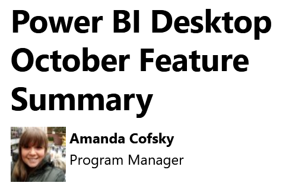
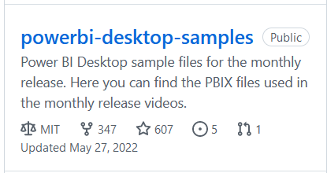
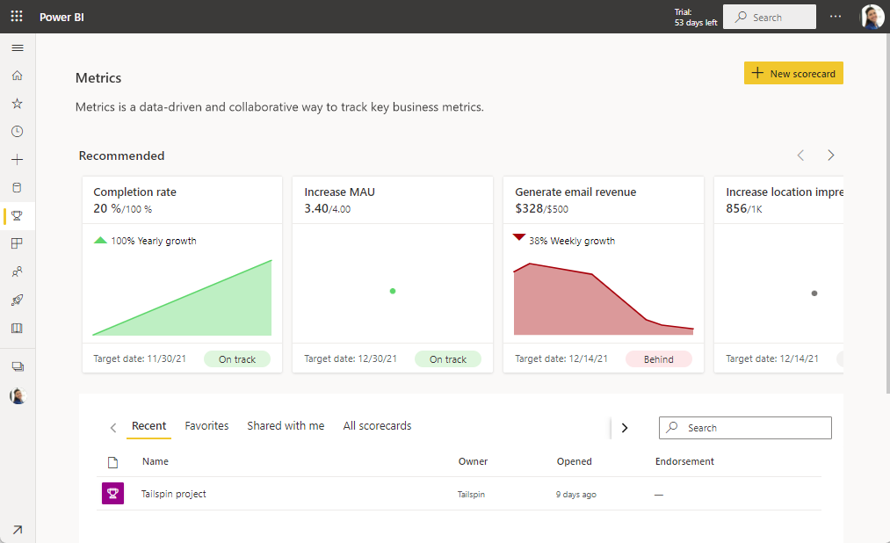

Les ressources pour se former à l'outil de visualisation des données de Microsoft.
Apprnez avec les meilleur.e.s à importer des données, les nettoyer, créer des tableaux de bord pertinents et interactifs.
Téléchargez le fichierVous trouverez ici quelques unes de mes vidéos pour apprendre à manipuler PowerBi.
Dépliez les différents niveaux en fonction de vos besoins.
Depuis la création de powerbi, l'équipe de développement fait une vidéo de 10 minutes chaque mois avec les nouveautés.
Toujours construit sur la même structure, ces pages sont une mines pour comprendre l'évolution du logiciel.
Le répertoire github où l'équipe PowerBi dépose ses fichiers exemples.
Ce dossier était un peu plus fourni à une certaine époque, mais vous trouverez des exemples sur les formules DAX.
les anciens fichiers ont été supprimés. Vous pouvez en retrouver la trace dans ce commit
Téléchargez les fichiers pour les formations "partenaires" PowerBi (profs et participants.
Remplissez le formulaire en indiquant que vous avez une formation demain... et vous obtiendrez le contenus complet avec powerpoint commentés et fichiers examples corrigés.
Récupérer les supportsLa documentation de PowerBi en français s'est énormément étoffée ces derniers mois.
Vous trouverez de nombreuses rubriques très utiles pour les commerciaux.